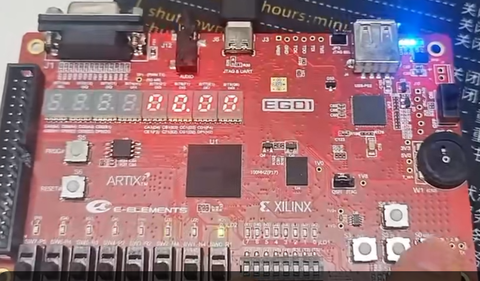
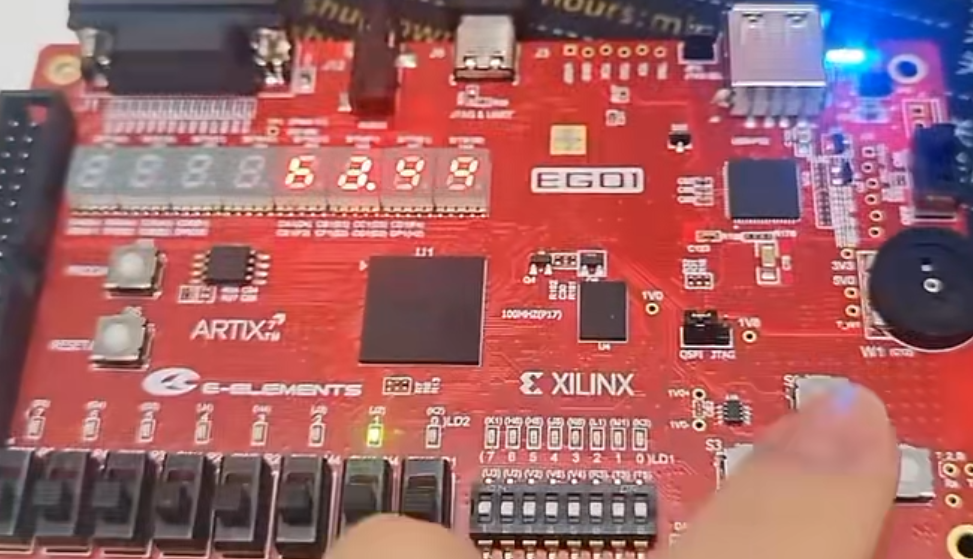

数字逻辑：综合项目（三）——系统集成与调试
实验目标
- 编写正式的顶层模块
stopwatch_top，整合所有子模块 - 编写完整的引脚约束文件（XDC）
- 掌握上板调试的基本方法
- 完成秒表系统的上板验证
1. 顶层模块设计
1.1 端口定义
顶层模块的端口直接对应 FPGA 的物理引脚：
module stopwatch_top (
input clk, // 100MHz 系统时钟
input sys_rst_n, // 系统复位按键（低有效）
input btn_ss, // Start/Stop 按键
input btn_clr, // Clear/Reset 按键
output [7:0] seg_r, // 右侧数码管段选 {a,b,c,d,e,f,g,dp}
output [7:0] seg_l, // 左侧数码管段选（未使用，全灭）
output [7:0] an, // 数码管位选 {BIT8,...,BIT1}
output [2:0] led_state // LED 指示当前状态
);
1.2 内部信号
// 控制信号
wire running, clear;
wire counter_rst_n;
wire tick_100hz;
// 按键信号
wire btn_ss_clean, btn_ss_pulse;
wire btn_clr_clean, btn_clr_pulse;
// 计数器信号
wire [3:0] cnt0, cnt1, cnt2, cnt3;
wire carry0, carry1, carry2;
// 显示信号
wire [3:0] an_active;
wire [7:0] seg_active;
assign counter_rst_n = sys_rst_n & ~clear;
assign seg_l = 8'b0; // 左侧数码管全灭
assign an = {4'b0000, an_active}; // 只用右侧4位
1.3 模块实例化
// ==== 分频器 ====
clk_div #(.MAX_COUNT(1_000_000)) u_100hz (
.clk(clk), .rst_n(counter_rst_n), .tick(tick_100hz)
);
// ==== 按键处理 ====
btn_debounce u_deb_ss (
.clk(clk), .rst_n(sys_rst_n), .btn_in(btn_ss), .btn_out(btn_ss_clean));
edge_detect u_edge_ss (
.clk(clk), .rst_n(sys_rst_n), .sig_in(btn_ss_clean),
.pos_edge(btn_ss_pulse), .neg_edge());
btn_debounce u_deb_clr (
.clk(clk), .rst_n(sys_rst_n), .btn_in(btn_clr), .btn_out(btn_clr_clean));
edge_detect u_edge_clr (
.clk(clk), .rst_n(sys_rst_n), .sig_in(btn_clr_clean),
.pos_edge(btn_clr_pulse), .neg_edge());
// ==== 状态机 ====
stopwatch_ctrl u_ctrl (
.clk(clk), .rst_n(sys_rst_n),
.btn_ss(btn_ss_pulse), .btn_reset(btn_clr_pulse),
.running(running), .clear(clear)
);
// ==== 计数器链 ====
bcd_counter u_cs0 (.clk(clk), .rst_n(counter_rst_n),
.en(tick_100hz & running), .cnt(cnt0), .carry(carry0));
bcd_counter u_cs1 (.clk(clk), .rst_n(counter_rst_n),
.en(carry0), .cnt(cnt1), .carry(carry1));
bcd_counter u_s0 (.clk(clk), .rst_n(counter_rst_n),
.en(carry1), .cnt(cnt2), .carry(carry2));
bcd_counter u_s1 (.clk(clk), .rst_n(counter_rst_n),
.en(carry2), .cnt(cnt3), .carry());
// ==== 显示 ====
dynamic_display u_disp (
.clk(clk), .rst_n(sys_rst_n),
.digit3(cnt3), .digit2(cnt2),
.digit1(cnt1), .digit0(cnt0),
.dp_in(4'b0100), // 小数点在秒与百分秒之间
.seg(seg_r), .an(an_active)
);
// ==== 状态LED指示 ====
assign led_state = {
(u_ctrl.state == 2'd2), // LED[2]: PAUSED
(u_ctrl.state == 2'd1), // LED[1]: RUNNING
(u_ctrl.state == 2'd0) // LED[0]: IDLE
};
注意：上面
led_state中使用了层次化引用u_ctrl.state，这在仿真中可用。如果综合不支持，可以将state从stopwatch_ctrl中引出为端口。
2. 引脚约束（XDC）
2.1 完整约束文件
## ============================================================
## 秒表项目 - EGO1 引脚约束
## ============================================================
## 系统时钟 100MHz
set_property PACKAGE_PIN P17 [get_ports clk]
set_property IOSTANDARD LVCMOS33 [get_ports clk]
## 按键（低有效）
set_property PACKAGE_PIN P15 [get_ports sys_rst_n]
set_property IOSTANDARD LVCMOS33 [get_ports sys_rst_n]
set_property PACKAGE_PIN R15 [get_ports btn_ss]
set_property IOSTANDARD LVCMOS33 [get_ports btn_ss]
set_property PACKAGE_PIN R11 [get_ports btn_clr]
set_property IOSTANDARD LVCMOS33 [get_ports btn_clr]
## 右侧数码管段选 seg_r = {a, b, c, d, e, f, g, dp}
set_property PACKAGE_PIN B4 [get_ports {seg_r[7]}]
set_property IOSTANDARD LVCMOS33 [get_ports {seg_r[7]}]
set_property PACKAGE_PIN A4 [get_ports {seg_r[6]}]
set_property IOSTANDARD LVCMOS33 [get_ports {seg_r[6]}]
set_property PACKAGE_PIN A3 [get_ports {seg_r[5]}]
set_property IOSTANDARD LVCMOS33 [get_ports {seg_r[5]}]
set_property PACKAGE_PIN B1 [get_ports {seg_r[4]}]
set_property IOSTANDARD LVCMOS33 [get_ports {seg_r[4]}]
set_property PACKAGE_PIN A1 [get_ports {seg_r[3]}]
set_property IOSTANDARD LVCMOS33 [get_ports {seg_r[3]}]
set_property PACKAGE_PIN B3 [get_ports {seg_r[2]}]
set_property IOSTANDARD LVCMOS33 [get_ports {seg_r[2]}]
set_property PACKAGE_PIN B2 [get_ports {seg_r[1]}]
set_property IOSTANDARD LVCMOS33 [get_ports {seg_r[1]}]
set_property PACKAGE_PIN D5 [get_ports {seg_r[0]}]
set_property IOSTANDARD LVCMOS33 [get_ports {seg_r[0]}]
## 左侧数码管段选（全灭，但仍需约束避免警告）
set_property PACKAGE_PIN D4 [get_ports {seg_l[7]}]
set_property IOSTANDARD LVCMOS33 [get_ports {seg_l[7]}]
set_property PACKAGE_PIN E3 [get_ports {seg_l[6]}]
set_property IOSTANDARD LVCMOS33 [get_ports {seg_l[6]}]
set_property PACKAGE_PIN D3 [get_ports {seg_l[5]}]
set_property IOSTANDARD LVCMOS33 [get_ports {seg_l[5]}]
set_property PACKAGE_PIN F4 [get_ports {seg_l[4]}]
set_property IOSTANDARD LVCMOS33 [get_ports {seg_l[4]}]
set_property PACKAGE_PIN F3 [get_ports {seg_l[3]}]
set_property IOSTANDARD LVCMOS33 [get_ports {seg_l[3]}]
set_property PACKAGE_PIN E2 [get_ports {seg_l[2]}]
set_property IOSTANDARD LVCMOS33 [get_ports {seg_l[2]}]
set_property PACKAGE_PIN D2 [get_ports {seg_l[1]}]
set_property IOSTANDARD LVCMOS33 [get_ports {seg_l[1]}]
set_property PACKAGE_PIN H2 [get_ports {seg_l[0]}]
set_property IOSTANDARD LVCMOS33 [get_ports {seg_l[0]}]
## 数码管位选 an = {BIT8, BIT7, ..., BIT1}
set_property PACKAGE_PIN G6 [get_ports {an[7]}]
set_property IOSTANDARD LVCMOS33 [get_ports {an[7]}]
set_property PACKAGE_PIN E1 [get_ports {an[6]}]
set_property IOSTANDARD LVCMOS33 [get_ports {an[6]}]
set_property PACKAGE_PIN F1 [get_ports {an[5]}]
set_property IOSTANDARD LVCMOS33 [get_ports {an[5]}]
set_property PACKAGE_PIN G1 [get_ports {an[4]}]
set_property IOSTANDARD LVCMOS33 [get_ports {an[4]}]
set_property PACKAGE_PIN H1 [get_ports {an[3]}]
set_property IOSTANDARD LVCMOS33 [get_ports {an[3]}]
set_property PACKAGE_PIN C1 [get_ports {an[2]}]
set_property IOSTANDARD LVCMOS33 [get_ports {an[2]}]
set_property PACKAGE_PIN C2 [get_ports {an[1]}]
set_property IOSTANDARD LVCMOS33 [get_ports {an[1]}]
set_property PACKAGE_PIN G2 [get_ports {an[0]}]
set_property IOSTANDARD LVCMOS33 [get_ports {an[0]}]
## LED 状态指示（根据手册确认引脚）
# set_property PACKAGE_PIN ?? [get_ports {led_state[2]}]
# set_property IOSTANDARD LVCMOS33 [get_ports {led_state[2]}]
# set_property PACKAGE_PIN ?? [get_ports {led_state[1]}]
# set_property IOSTANDARD LVCMOS33 [get_ports {led_state[1]}]
# set_property PACKAGE_PIN ?? [get_ports {led_state[0]}]
# set_property IOSTANDARD LVCMOS33 [get_ports {led_state[0]}]
重要：EGO1 按键为低电平有效，复位信号
sys_rst_n已采用低有效设计。LED 的引脚请查阅 EGo1.xdc 参考文件填写。数码管引脚已确认正确。
3. 上板调试方法
3.1 分步验证策略
不要一上来就测试完整系统！按以下顺序逐步验证：
| 步骤 | 测试内容 | 方法 |
|---|---|---|
| 1 | 分频器 | LED接1Hz输出，确认闪烁频率 |
| 2 | 数码管显示 | 固定输入 1234，确认显示正常 |
| 3 | 计数器 | 让计数器自由运行，数码管显示递增 |
| 4 | 按键 | 按键控制单个LED，确认消抖有效 |
| 5 | 完整系统 | 所有功能联调 |
3.2 常见问题排查
| 现象 | 可能原因 | 排查方法 |
|---|---|---|
| 数码管不亮 | 位选/段选引脚错误 | 先测试静态显示 |
| 数码管显示乱码 | 段码位序错误 | 固定输入0-9逐个核对 |
| 按键不响应 | 引脚错误或高/低电平反了 | 按键直连LED测试 |
| 计数不准 | 分频系数错误 | 用手机秒表对比 |
| 按键跳数 | 消抖参数太小 | 增大 DEBOUNCE_MAX |
| 清零无效 | FSM逻辑错误 | 仿真检查状态转移 |
3.3 使用仿真波形排查
如果上板行为异常，回到仿真中验证： 1. 在 testbench 中模拟相同的输入序列 2. 观察内部信号波形（状态、使能、进位等） 3. 找到第一个不符合预期的信号，定位问题模块
4. 本周实验任务
步骤1：编写 stopwatch_top.v
参考第1节的代码，整合所有模块。
步骤2：编写 XDC 约束
复制第2节的约束，填写按键和LED的正确引脚。
步骤3：仿真完整系统
编写 testbench，模拟以下操作序列： 1. 复位 2. 按 Start → 观察计数开始 3. 等待若干秒 4. 按 Stop → 观察计数停止 5. 按 Start → 观察计数继续 6. 按 Stop → 暂停 7. 按 Reset → 观察清零
步骤4：上板验证
按照 3.1 节的分步策略，逐步验证每个功能。
上板验收标准
- 上电后显示
00.00 - 按 Start 后开始计时，数字快速递增
- 按 Stop 后计时暂停，数码管数字冻结
- 暂停状态按 Start 继续计时
- 暂停状态按 Reset 清零回到
00.00 - 运行状态按 Reset 无效（不清零）
- 数码管显示稳定，小数点正确

